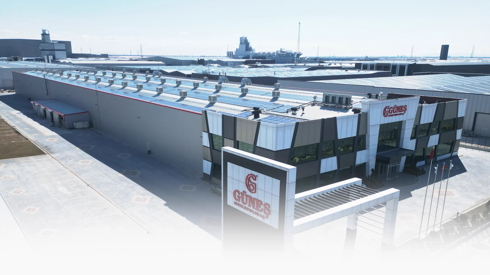
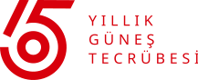
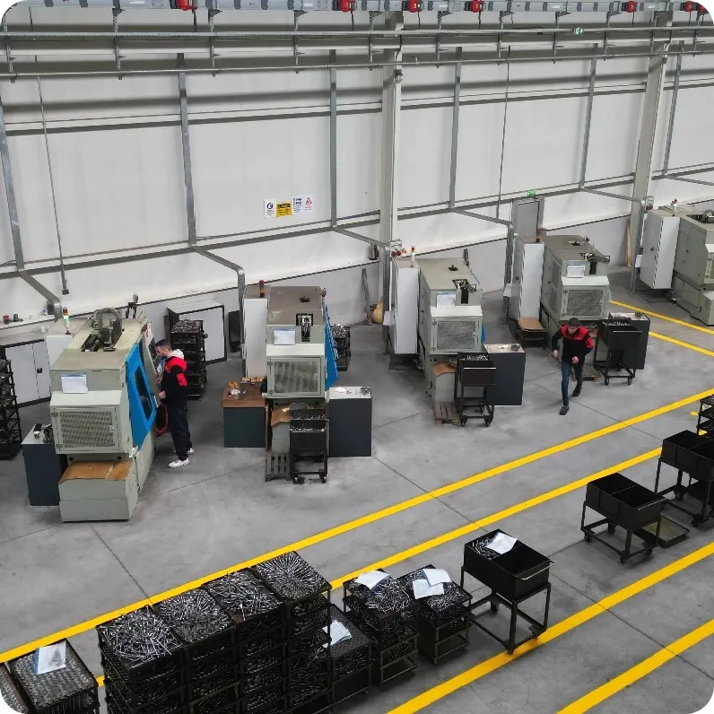

Değişmeyen Güneş Felsefesi
Memnuniyetiniz Sözümüzdür.

Sizin İçin Güvenilir Kalite

Değişmeyen Güneş Felsefesi
Memnuniyetiniz Sözümüzdür.

Sizin İçin Güvenilir Kalite
Güneş Motor Supapları olarak, 65 yılı aşkın köklü tecrübemiz, yenilikçi vizyonumuz ve modern üretim altyapımızla, her marka dizel ve benzinli araç için yüksek kaliteli supap üretimi gerçekleştiriyoruz. Kuruluşumuzdan bu yana, yalnızca ürün üretmekle kalmayıp kaliteyi işimizin ve yaşamımızın vazgeçilmez bir parçası haline getirdik. Kullanılan hammaddeden üretim süreçlerine, satıştan satış sonrası desteğe kadar her aşamada kalite odaklı bir yaklaşım benimsiyoruz. Bu doğrultuda, ISO 9001:2008 Kalite Yönetim Sistemi ile çalışmalarımızı sürdürüyor; müşterilerimize güvenilir, dayanıklı ve yüksek performanslı ürünler sunmanın gururunu yaşıyoruz.
Üretim hattımızda, DIN 17480 standartlarına uygun martensitik ve östenitik supap çelikleri kullanılmakta olup, ürünlerimizin her biri ileri teknoloji ekipmanlarla ve uzman mühendislerimizin titiz çalışmalarıyla üretilmektedir. Teknolojiye yaptığımız yatırımların yanı sıra, insan kaynağımıza da sürekli yatırım yaparak, çalışanlarımızın bilgi ve yetkinliklerini artırıyor; bu sayede sektörde fark yaratan bir firma olmaya devam ediyoruz.
Yönetim anlayışımızı; tedarikçilerimizden müşterilerimize kadar tüm iş süreçlerini kapsayan, profesyonellik esasına dayanan ve sürekli iyileştirme felsefesiyle şekillendiriyoruz. Hedefimiz, yalnızca iç pazarda değil, uluslararası pazarlarda da rekabet gücümüzü artırmak ve sektördeki liderliğimizi pekiştirmektir.
Güneş ailesiyle tanıştığınızda; değişimi benimsemiş, farklılık yaratan, kendi alanında iç pazarda lider konumda bulunan ve global pazarda büyümeye devam eden bir şirketle iş birliği yapmanın ayrıcalığını yaşayacaksınız. Bugün geldiğimiz noktada, 65 yıllık bilgi birikimimiz ve tecrübemizle, sektörde güvenin, kalitenin ve yeniliğin adı olmaktan gurur duyuyoruz.
Vizyonumuz
Müşteri ihtiyaç ve beklentilerine en uygun ürünleri sunarak, dünya otomotiv yan sanayisinin beğeni ile izlenilen öncü bir kuruluşu oluncaya kadar yılmadan azimle çalışmak, çalışmak, çalışmak…
Misyonumuz
Müşteri ve çalışanlarıyla olan diyoloğunu en üst düzeyde tutan, sürekli gelişen ve sürekli gelişmeyi temel ilke olarak benimseyen, çevreye olan duyarlılığını hiç kaybetmeyen, müşteri istek beklentilerini doğru anlayıp, doğru yorumlayan kurumsal bir firma. Kısaca Problem üreten değil, çözüm üreten bir kuruluş.

Başkanın Kaleminden
Değerli İş Ortaklarımız, Kıymetli Dostlarımız
Güneş Motor Supapları A.Ş. olarak, 65 yılı aşan tecrübemizle, benzinli ve dizel tüm araçlar için yüksek kaliteli motor supapları üretmeye devam ediyoruz. Kuruluşumuzdan bu yana benimsediğimiz “Memnuniyetiniz Sözümüzdür” ilkesiyle, her zaman önceliğimiz siz değerli müşterilerimizin memnuniyeti oldu.
Alanında uzman kadromuz ve teknolojinin en güncel imkanlarını kullandığımız modern üretim tesislerimizle, müşterilerimizin ihtiyaç ve beklentilerine en uygun çözümleri sunmak için çalışıyoruz. Ar-Ge yatırımlarımız sayesinde, her zaman daha iyisini üretmek ve sizlere hızlı, etkili ve sürdürülebilir çözümler sunmak için kendimizi sürekli geliştiriyoruz.
Bugün, Güneş Motor Supapları olarak yalnızca bir üretici değil, aynı zamanda büyük bir aileyiz. Bu güçlü birlikteliğin verdiği motivasyonla, daha da büyümek ve başarılarımızı sizlerle birlikte paylaşmak istiyoruz. Hep birlikte nice başarılara imza atmak dileğiyle, sizleri en içten duygularımla selamlıyorum.
Genel Müdürü
Mehmet Avcı
Memnuniyetiniz
sözümüzdür
© 2025 Gunes Subap | Her Hakkı Saklıdır.